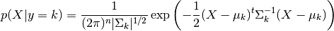
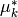

1.2. 线性和二次判别分析（LDA 和 QDA）¶
Linear Discriminant Analysis (discriminant_analysis.LinearDiscriminantAnalysis)
and Quadratic Discriminant Analysis (discriminant_analysis.QuadraticDiscriminantAnalysis)
are two classic classifiers, with, as their names suggest, a linear and a quadratic decision surface, respectively.
These classifiers are attractive because they have closed-form solutions that can be easily computed, are inherently multiclass, have proven to work well in practice and have no hyperparameters to tune.

The plot shows decision boundaries for Linear Discriminant Analysis and Quadratic Discriminant Analysis. The bottom row demonstrates that Linear Discriminant Analysis can only learn linear boundaries, while Quadratic Discriminant Analysis can learn quadratic boundaries and is therefore more flexible.
Examples:
Linear and Quadratic Discriminant Analysis with confidence ellipsoid : Comparison of LDA and QDA on synthetic data.
1.2.1. LDA 用于维数约简¶
discriminant_analysis.LinearDiscriminantAnalysis can be used to perform supervised
dimensionality reduction, by projecting the input data to a linear subspace consisting of the
directions which maximize the separation between classes (in a precise sense discussed in the
mathematics section below). The dimension of the output is necessarily less that the number of
classes, so this is a in general a rather strong dimensionality reduction, and only makes
senses in a multiclass setting.
This is implemented in discriminant_analysis.LinearDiscriminantAnalysis.transform。
The desired dimensionality can be set using the n_components constructor parameter。
This parameter has no influence on discriminant_analysis.LinearDiscriminantAnalysis.fit
or discriminant_analysis.LinearDiscriminantAnalysis.predict.
Examples:
Comparison of LDA and PCA 2D projection of Iris dataset: Comparison of LDA and PCA for dimensionality reduction of the Iris dataset
1.2.2. LDA分类器与QDA分类器的数学表述¶
Both LDA and QDA can be derived from simple probabilistic models which model
the class conditional distribution of the data
for each class
 .
Predictions can then be obtained by using Bayes’ rule:
.
Predictions can then be obtained by using Bayes’ rule:
More specifically, for linear and quadratic discriminant analysis, is modelled as a multivariate Gaussian distribution with density:

To use this model as a classifier, we just need to estimate from the training
data the class priors  (by the proportion of instances of class
),
the class means
(by the proportion of instances of class
),
the class means  (by the empirical sample class means)
and the covariance matrices (either by the empirical sample class covariance
matrices, or by a regularized estimator: see the section on shrinkage below).
(by the empirical sample class means)
and the covariance matrices (either by the empirical sample class covariance
matrices, or by a regularized estimator: see the section on shrinkage below).
In the case of LDA, the Gaussians for each class are assumed to share the same
covariance matrix: for all
.
This leads to
linear decision surfaces between, as can be seen by comparing the the
log-probability ratios ![\log[P(y=k | X) / P(y=l | X)]](./images/e97ecabcc51db3bd271f1b5b0cf3fcebdd989108.png) :
:

In the case of QDA, there are no assumptions on the covariance matrices
 of the Gaussians, leading to quadratic decision surfaces. See
[3] for more details.
of the Gaussians, leading to quadratic decision surfaces. See
[3] for more details.
Note
Relation with Gaussian Naive Bayes
If in the QDA model one assumes that the covariance matrices are diagonal,
then this means that we assume the classes are conditionally independent,
and the resulting classifier is equivalent to the Gaussian Naive Bayes
classifier naive_bayes.GaussianNB.
1.2.3. LDA维数约简的数学表述¶
To understand the use of LDA in dimensionality reduction, it is useful to start
with a geometric reformulation of the LDA classification rule explained above.
We write  for the total number of target classes. Since in LDA we
assume that all classes have the same estimated covariance
for the total number of target classes. Since in LDA we
assume that all classes have the same estimated covariance
 , we
can rescale the data so that this covariance is the identity:
, we
can rescale the data so that this covariance is the identity:

Then one can show that to classify a data point after scaling is equivalent to
finding the estimated class mean  which is closest to the data
point in the Euclidean distance. But this can be done just as well after
projecting on the  affine subspace
affine subspace  generated by all the
for all classes. This shows that, implicit in the LDA
classifier, there is a dimensionality reduction by linear projection onto a
dimensional space.
generated by all the
for all classes. This shows that, implicit in the LDA
classifier, there is a dimensionality reduction by linear projection onto a
dimensional space.
We can reduce the dimension even more, to a chosen  , by projecting
onto the linear subspace
, by projecting
onto the linear subspace  which maximize the variance of the
after projection (in effect, we are doing a form of PCA for the
transformed class means ). This
corresponds to the
which maximize the variance of the
after projection (in effect, we are doing a form of PCA for the
transformed class means ). This
corresponds to the
n_components
parameter used in the
discriminant_analysis.LinearDiscriminantAnalysis.transform method. See
[3] for more details.
1.2.4. 缩减(Shrinkage)¶
Shrinkage is a tool to improve estimation of covariance matrices in situations
where the number of training samples is small compared to the number of
features. In this scenario, the empirical sample covariance is a poor
estimator. Shrinkage LDA can be used by setting the shrinkage parameter of
the discriminant_analysis.LinearDiscriminantAnalysis class to ‘auto’.
This automatically determines the optimal shrinkage parameter in an analytic
way following the lemma introduced by Ledoit and Wolf [4]. Note that
currently shrinkage only works when setting the solver parameter to ‘lsqr’
or ‘eigen’.
The shrinkage parameter can also be manually set between 0 and 1. In
particular, a value of 0 corresponds to no shrinkage (which means the empirical
covariance matrix will be used) and a value of 1 corresponds to complete
shrinkage (which means that the diagonal matrix of variances will be used as
an estimate for the covariance matrix). Setting this parameter to a value
between these two extrema will estimate a shrunk version of the covariance
matrix.

1.2.5. 估计算法¶
The default solver is ‘svd’. It can perform both classification and transform, and it does not rely on the calculation of the covariance matrix. This can be an advantage in situations where the number of features is large. However, the ‘svd’ solver cannot be used with shrinkage.
The ‘lsqr’ solver is an efficient algorithm that only works for classification. It supports shrinkage.
The ‘eigen’ solver is based on the optimization of the between class scatter to within class scatter ratio. It can be used for both classification and transform, and it supports shrinkage. However, the ‘eigen’ solver needs to compute the covariance matrix, so it might not be suitable for situations with a high number of features.
Examples:
Normal and Shrinkage Linear Discriminant Analysis for classification: Comparison of LDA classifiers with and without shrinkage.